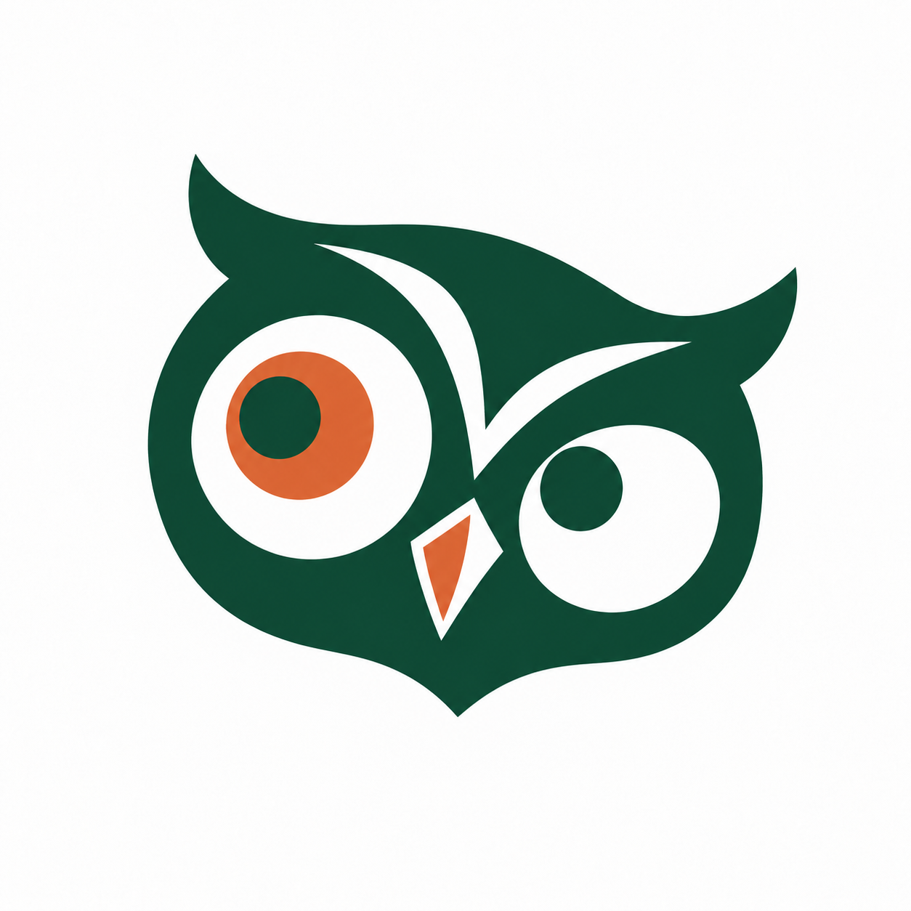

1 Coruja

ObservatórioUFG · INTELIGÊNCIA ARTIFICIALUma coruja assimétrica, com o olhar em destaque. A proposta transmite curiosidade e atenção.
3 votos
Opus 5.5 · Ana Paula Matos · Vitória
Opção 1 · Coruja
Leituras selecionadas, documentos, vídeos, áudios, entrevistas, papers científicos e apresentações reunidos em um acervo temático.